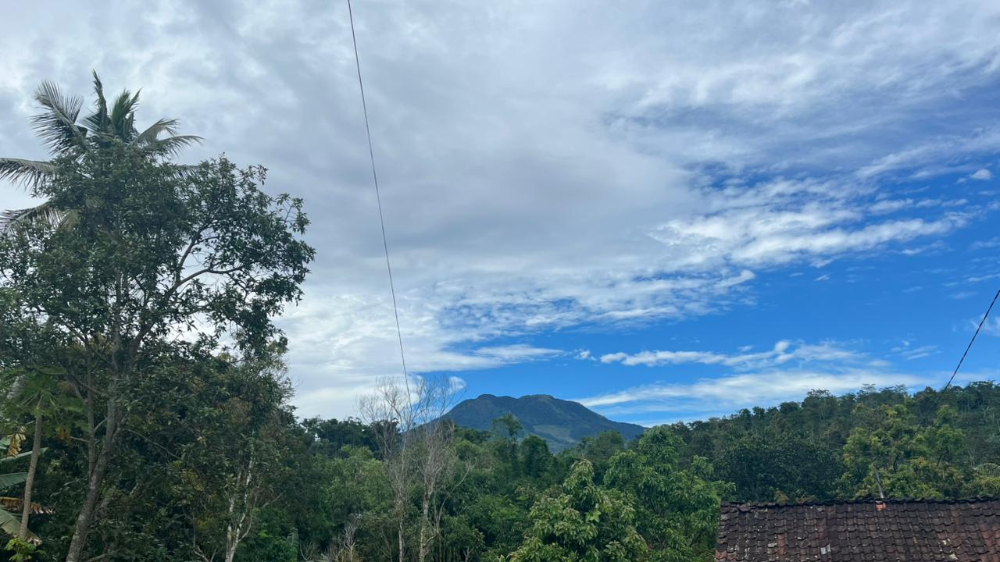

Visi & Misi Desa
Visi
"Mewujudkan Desa Banyukuning yang Mandiri, Sejahtera, dan Berbudaya melalui Pembangunan yang Berkelanjutan dan Berkeadilan berlandaskan Gotong Royong."
Misi
- Meningkatkan kualitas pelayanan publik yang transparan, akuntabel, dan partisipatif
- Membangun infrastruktur desa yang berkualitas dan merata di seluruh wilayah
- Mengembangkan potensi ekonomi lokal melalui pemberdayaan UMKM dan sektor pertanian
- Meningkatkan kualitas pendidikan dan kesehatan masyarakat desa
- Melestarikan nilai-nilai budaya, tradisi, dan kearifan lokal masyarakat
- Mewujudkan pengelolaan lingkungan hidup yang berkelanjutan
- Meningkatkan partisipasi masyarakat dalam pembangunan desa
Struktur Perangkat Desa
Susunan organisasi pemerintahan Desa Banyukuning

Setyo Utomo
Kepala Desa
Ani Listiyawati
Sekretaris Desa
Nur Faidah
Kasi Umum
Al.Krisdiyanto
Kasi Keuangan

Nasori
Kaur Kemasyarakatan
Abdul Usman
Kasi Pemerintahan
Zaetun
Kasi Pembangunan
Besurya
Kasi TRANTIB
Abdul Jalil
Unsur Agama
Hadi Setiyanto
Unsur Agama
Rifai Burhanudin
Unsur Agama
Nur Kholis
Unsur Agama
Sudadi
Unsur Agama
Mahsun
Kadus Krajan
Y.Supardi
Kadus Kedungwangan
Satun
Kadus Jangglengan
Nur Asom
Kadus Tlogosari
Edi Purwanto
Kadus Kaliwinong
Susilo
Kadus Ploso
Dahono
Kadus Kayuapak
Cahyo Alasyhar
Kadus Mendongan
Mulyono
Kadus Gentan
Sunarto
Kadus Pakisan
Sururi
Kadus Berokan
Sumiyarto
Kadus Banaran